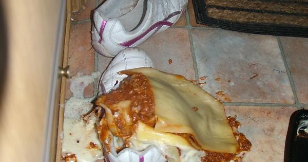

Lasagna

Description
In this recipe we will be making a dish of lasagna. Lasagna is fucking disgusting, it is absolutely filled with melted cheese and pasta. Every time I attempt to eat lasagna I genuinely feel that I am going to throwup. I do not recommend this dish to anyone, and I highly suggest that under no circumstance does anyone agree to having lasagna for a meal.
Ingredients
- 1 pound Italian sausage
- 3/4 pound ground beef
- 1/2 cup onion
- 2 cloves garlic
- 1 can crushed tomatoes
- 2 cans tomato paste
- 2 cans tomato sauce
- 12 lasagna noodles
- 16 ounces ricotta cheese
- egge
Steps
- In a Dutch oven, cook sausage, ground beef, onion, and garlic over medium heat until well browned. Stir in tomatoes and water. Season to your liking (recipe says add sugar but that sounds truly vile). Let simmer, covered, for 1 1/2 hours, stirring occasonally.
- Bring a large pot of lightly salted water to a boil. Cook lasagna noodles in boiling water for 8 to 10 minutes. Drain noodles, and rinse with cold water. In a mixing bowl, combine ricotta cheese with egg, parsley, and 1/2 teaspoon salt.
- Preheat oven to 375 degrees F (190 degrees C).
- To assemble, spread 1 1/2 cups of meat sauce in the bottom of 9x13-inch baking dish. Arrange 6 noodles lengthwise over meat sauce. Spread with one half of the ricotta cheese mixture. Top with a third of mozzarella cheese slices. Spoon 1 1/2 cups meat sauce over mozzarella and Parmesan cheese. Cover with foil: to perevent sticking, either spray foil with cooking spray, or make sure the foil does not touch the cheese.
- Bake in preheated oven for 25 minutes. Remove foil, and bake an additional 25 minutes. Cool for 15 minutes before serving.